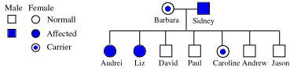

Color Blindness Problem Set
Problem 5: Pedigree representation for Liz
In her message, Audrei also tells us that her sister Liz and brother Paul are also color blind, but that her brother David has normal vision. How will Liz be represented on the family pedigree?

Liz inherited one X-chromosome from each of her parents. She received an X-chromosome with the red-green color blind allele from her father and one from her mother.


The Biology Project
University of Arizona
Saturday, October 10, 1998
Contact the Development Team
http://biology.arizona.edu
All contents copyright © 1998. All rights reserved.